Case 09 of 18 · CINEOSIS
Hand Butter
Can the making of a film be told by its own cast?
A four-minute making-of in a screening room, performed by Bola, Shim and the Critic, a new figure who wears a blindfold because he sees the pictures but not what was meant.
How it was made
- Eight scenes, each built around frames of finished passages on the screen.
- The Critic's quoted lines come from reviews that actually took place.
- Voices synthesized locally with Piper; mouths opened by the loudness of each line.
What this case teaches
- The review process can be shown on screen instead of described in a report.
- Quoting the real reviews keeps the making-of honest: the Critic only says what a critic said.
- The projector is the key light, so the same integration standard applies to the cast in front of the screen.
How it differs. Every earlier case made a sign readable. This one makes the process readable.
First sheet and last sheet
Where the stage started and where it finished.
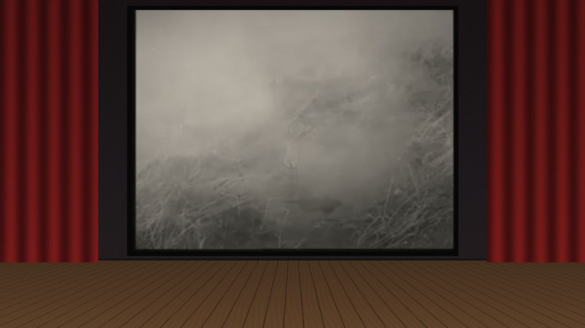
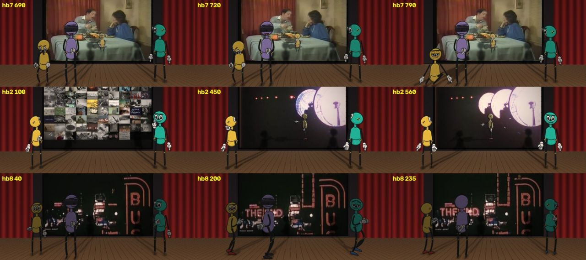
The sheets, step by step
Grouped by working session. Click any sheet to view it full size; use the arrow keys to move through them.
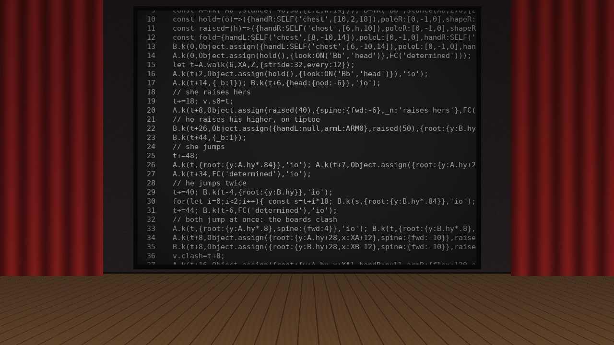
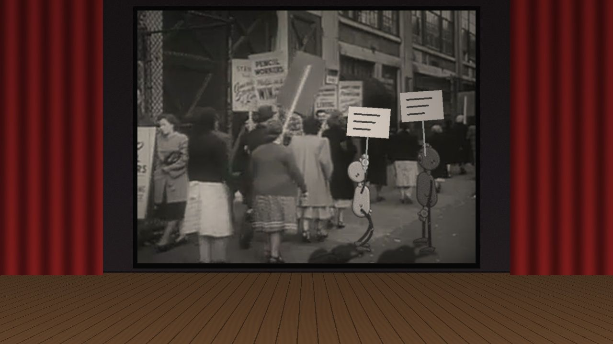
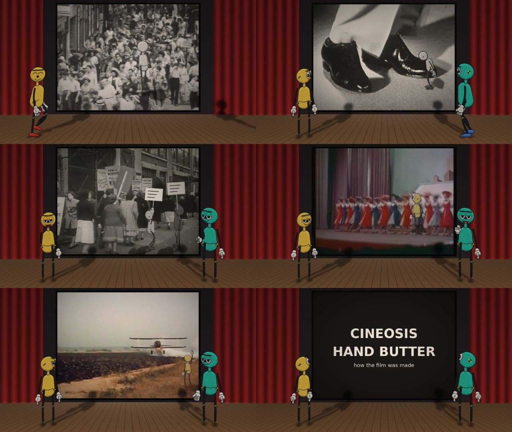
Show 8 more from this step
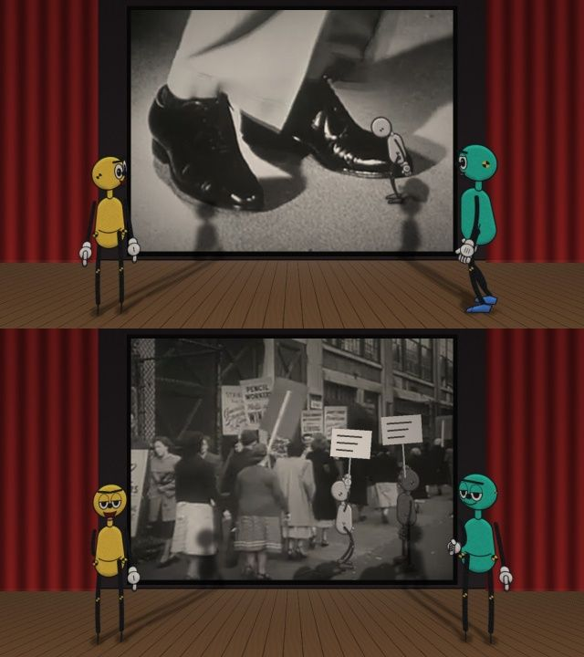
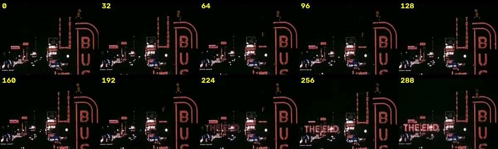
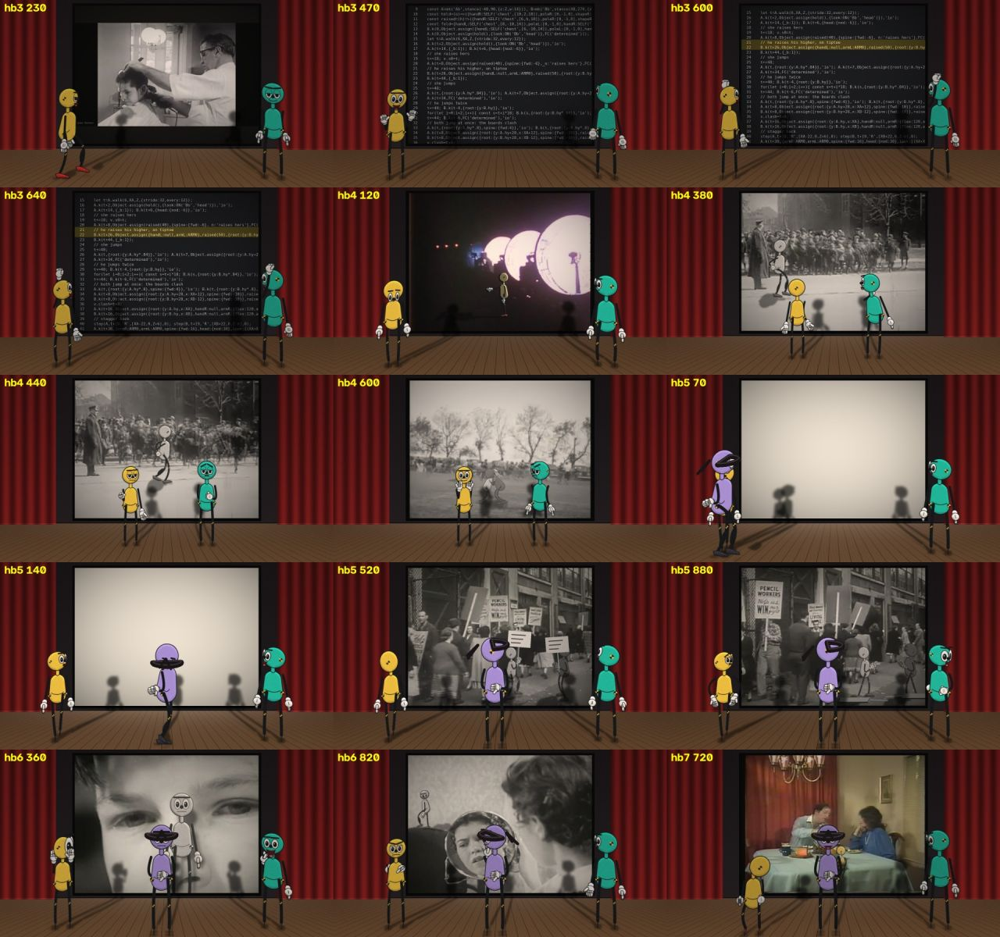
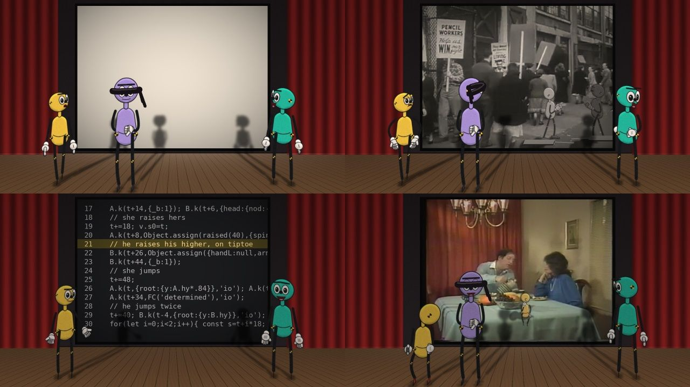
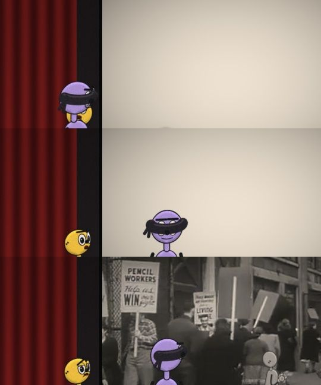
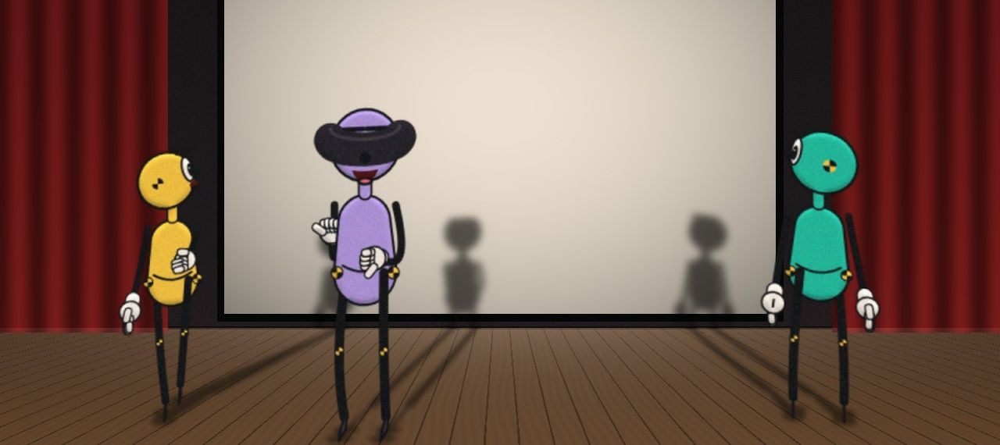
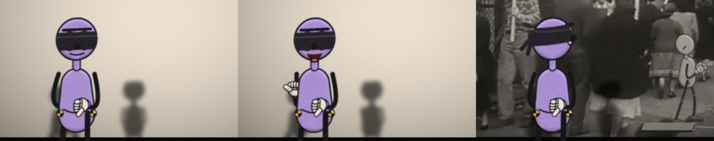
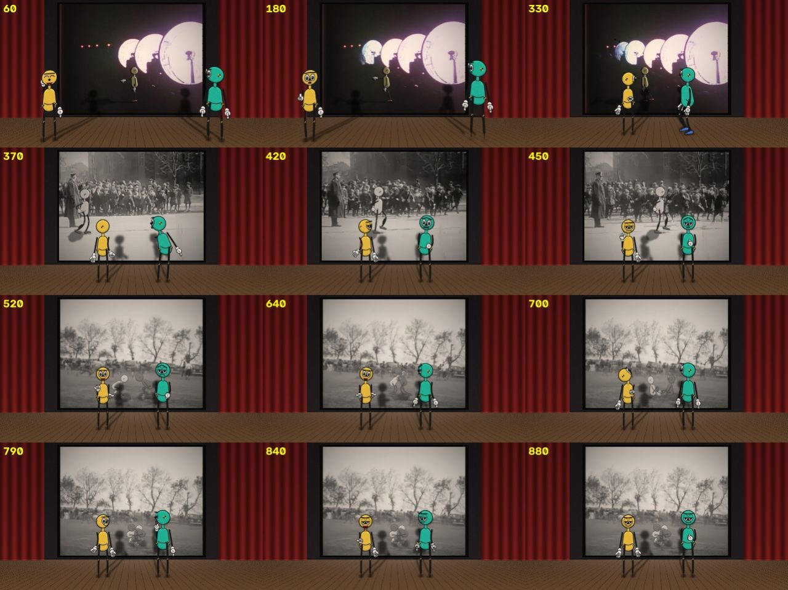
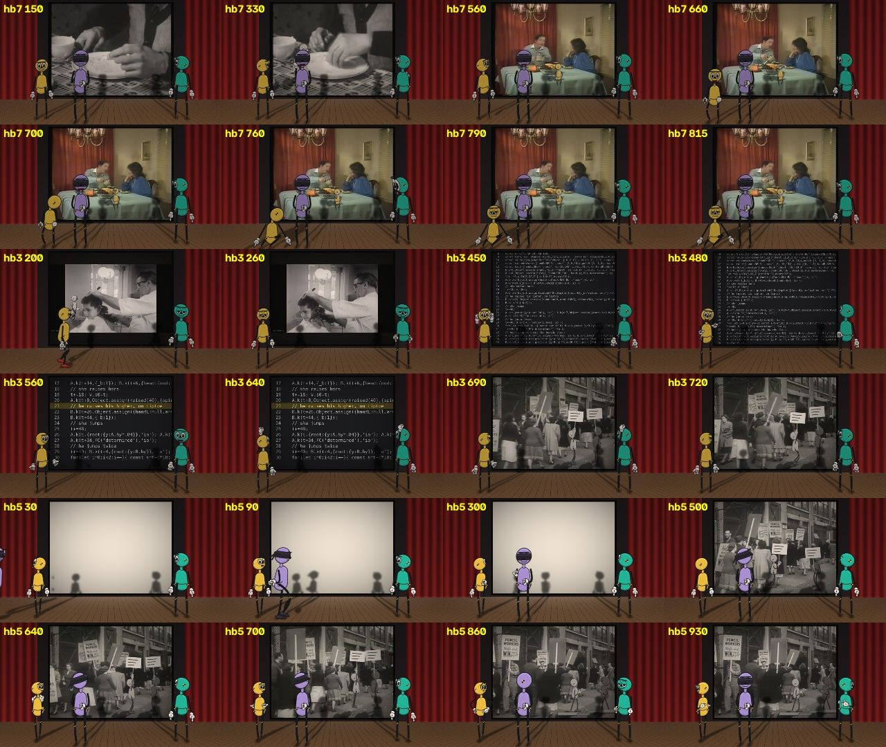
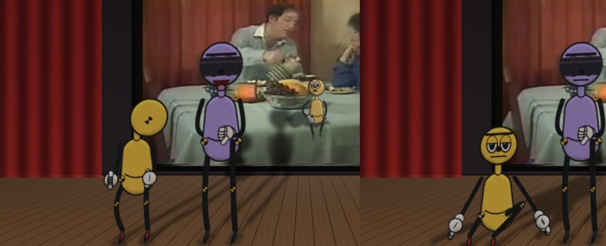
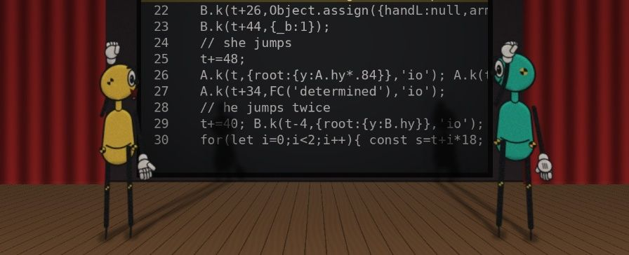
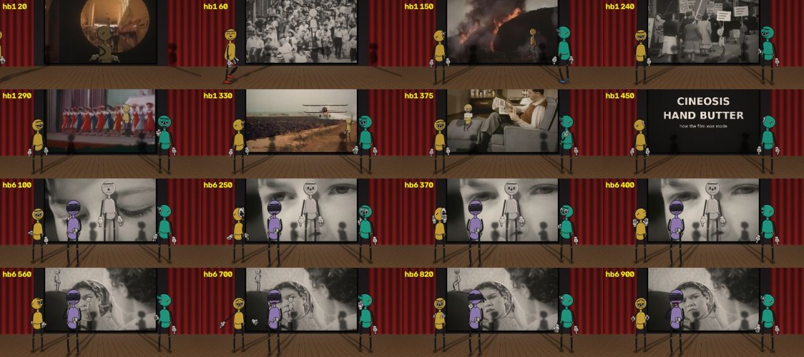
What came out of it


Read the record
Carried forward
The family's method moves to a new project: drawn figures over found footage.